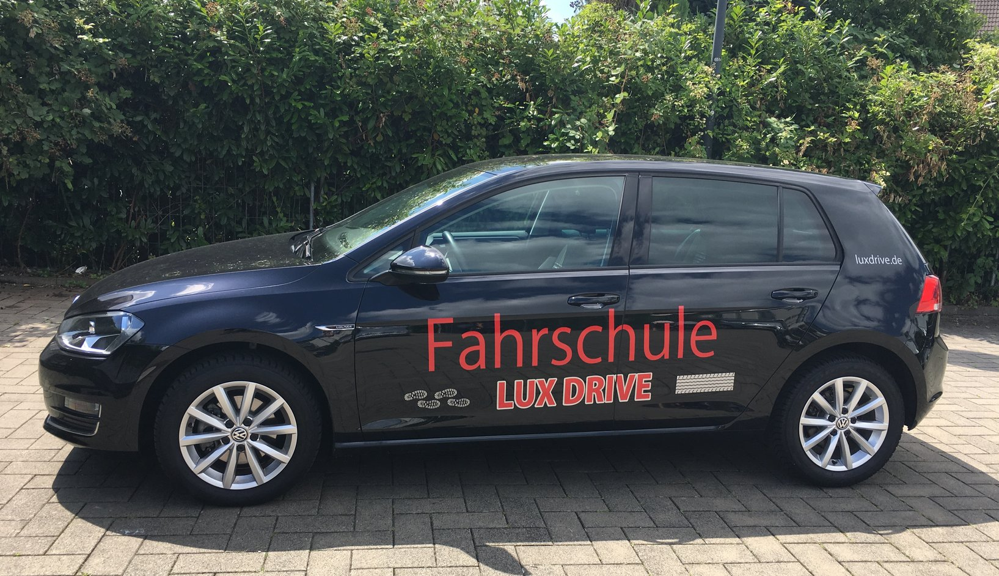

Unsere praktische Ausbildung
Mit modernen Fahrzeugen und individuell angepassten Fahrstunden bereiten wir Sie optimal auf den Straßenverkehr vor.
Warum LuxDrive?

Moderne Fahrzeuge
VW Golf (Schaltung) und BMW X1 (Automatik) – perfekt für Ihre Bedürfnisse.
Erfahrene Fahrlehrer
Unsere Experten führen Sie mit Geduld und Kompetenz sicher ans Ziel.
Flexible Fahrzeiten
Fahrstunden nach Ihrem Zeitplan – stressfrei und unkompliziert.
Bereit für die Praxis?
Vereinbaren Sie noch heute Ihre erste Fahrstunde bei uns!
Jetzt Kontakt aufnehmen